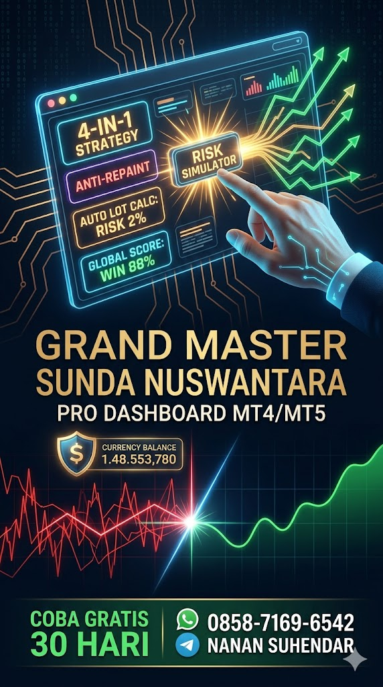

KENDALIKAN MASA DEPAN FINANSIAL ANDA!
Ubah cara Anda bertrading dari sekadar ikut-ikutan menjadi Trader Mandiri yang Profesional.
🛑 BERHENTI BAKAR UANG UNTUK LANGGANAN SINYAL! 🛑
Banyak trader pemula terjebak membayar grup VIP Signal setiap bulan. Padahal, punya alat sendiri jauh lebih menguntungkan. Mari kita bedah faktanya:
👎 Langganan Sinyal VIP (Bulanan)
- Biaya Membengkak: Bayar terus tiap bulan. Jika ditotal setahun, biayanya jauh lebih mahal dari harga indikator.
- Ketergantungan Total: Anda tidak akan pernah pintar. Kalau Master/Adminnya sibuk atau grup tutup, Anda tidak bisa trading.
- Sering Telat (Delay): Sinyal dikirim di Telegram, begitu Anda buka MT4, harga sudah lari jauh. Telat pucuk!
- Risiko Lot Ngawur: Sinyal orang lain tidak tahu ketahanan saldo Anda. Sering berujung Margin Call (MC) karena salah ketik Lot.
👍 Beli Indikator Grand Master SN
- Sekali Bayar (Life-Time): Cukup beli lisensi satu kali untuk seumur hidup. Bebas biaya langganan bulanan. Investasi paling cerdas!
- 100% Mandiri & Bebas Waktu: Trading kapan saja Anda mau. Pagi, siang, malam, indikator selalu siap mencari peluang untuk Anda.
- Anti Telat Entry: Sinyal muncul langsung di layar MT4/MT5 Anda secara real-time. Tidak ada lagi cerita ketinggalan kereta.
- Auto Lot & Risk Manager: Sistem otomatis menghitungkan Lot sesuai saldo Anda agar akun selalu aman dari kebangkrutan.
📖 CARA MENGGUNAKAN GRAND MASTER SN
Sistem ini dirancang agar trader pemula sekalipun bisa langsung mencetak profit seperti institusi besar. Ikuti panduan simpel ini:
1. Instalasi & Aktivasi
- Pasang file .ex4 (untuk MT4) atau .ex5 (untuk MT5) ke dalam folder Indicators.
- Buka chart apapun (disarankan Timeframe M30 atau H1).
- Masukkan ke chart. Di menu Input Parameters, perhatikan kolom License_Key:
- Mode Gratis (Trial): Biarkan isi kolom bertuliskan TRIAL. Anda bisa menggunakan indikator ini secara Full Feature selama 30 Hari sejak pertama kali dipasang.
- Mode VIP (Permanen): Masukkan kode lisensi rahasia (contoh: SN-123456) yang didapatkan dari admin setelah melakukan pembelian.
2. Cara Membaca Panel Sinyal Utama
Panel ini memonitor 4 Strategi sekaligus dalam satu layar:
- PROB: Persentase keakuratan sinyal (Win Rate). Di atas 80% sangat disarankan untuk masuk (Entry).
- ACT (Action): Status eksekusi (BUY warna Hijau, SELL warna Merah, HOLD/IGN warna Abu-abu).
- LOT: Rekomendasi besaran Lot otomatis yang dihitung berdasarkan jarak Stop Loss dan persentase Risiko harian Anda (Default: 1-5% dari Balance). Tidak perlu ngitung manual lagi!
- SL & TP: Angka pasti untuk dipasang di parameter Stop Loss dan Take Profit MT4/MT5 Anda.
3. Cara Membaca Garis & Panah di Chart
Setiap ada sinyal valid, indikator akan otomatis menggambar di layar Anda:
- Panah Bulat: Titik Entry. (Biru = Buy, Merah = Sell).
- Garis Solid (Utuh): Level harga Entry.
- Garis Dot (Titik-titik Merah): Batas Stop Loss (SL).
- Garis Dash (Putus-putus Hijau): Batas Take Profit (TP).
- Catatan: Sinyal Intraday dan Sniper bersifat ANTI-REPAINT (Terkunci, tidak akan hilang/pindah jika harga berbalik, kecuali ganti hari).
4. Tracker & Simulator Spesial
- INFO (PWR): Menampilkan status pergerakan floating sinyal saat ini dalam hitungan Pips, atau umur candle dari sinyal tersebut.
- GLOBAL SCOREBOARD: Fitur ini merekam seluruh riwayat sinyal di semua pair yang Anda buka. Berapa yang untung (WIN) dan rugi (FAIL) hari ini akan direkam akurat meskipun Anda ganti-ganti Timeframe.
- BENSIN & SPEED: Mengukur kejenuhan market harian. Jika Bensin > 100%, JANGAN entry meneruskan arah trend karena harga sudah kehabisan napas dan rawan berbalik arah (Reversal). Kecepatan pergerakan harga. Di atas 10 Pts/m artinya market sedang sangat agresif.
- RISK SIMULATOR: Ini adalah Mesin Peramal Risiko. Jika Anda punya banyak posisi terbuka (Buy dan Sell bercampur), mesin ini akan menghitung Net Lot Anda dan menampilkan estimasi dalam nilai Uang ($) apa yang akan terjadi pada Saldo Anda jika market tiba-tiba naik (UP) atau anjlok (DN) sejauh ratusan Pips.
AMBIL KENDALI TRADING ANDA SEKARANG!
Jangan biarkan modal Anda habis karena coba-coba atau bayar biaya langganan bulanan tanpa kepastian. Miliki sistem profesional ini di PC Anda selamanya.
📲 HUBUNGI ADMIN (WA)
📜 BACA RULES TRADING & T.O.S
Dapatkan versi Trial 30 Hari secara gratis sebelum memutuskan membeli Lisensi VIP Life-time!